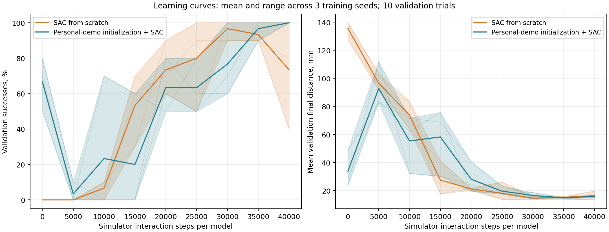

Interactive submission report ↗
SAC from scratch versus personal-demo actor initialization, compared with learned-model MPC and classical geometric feedback.
State-based robot learning. Every controller sees object, tool and goal coordinates from MuJoCo. The real videos affect the dynamics model, demonstration prior and initialized SAC actor. Vision/language inputs are outside this experiment.
Two SAC variants, 3 training seeds (0, 1, 2), 40,000 simulator interaction steps per model. Both use the same actor/critic architecture, reward, action bounds and training distribution. Validation uses seed 9012; the final fixed-budget checkpoints are evaluated once on twenty paired seed-2026 trials. Learning curves do not select checkpoints.
The imitation initializer uses 123 action labels from the three training recordings, with consistent rotation augmentation. It minimizes action error for the actor mean. Critics and replay learn entirely from robot simulation. Human video transitions are never treated as robot-physics experience. The held-out and validation recordings are excluded from imitation.
The initialized actor is also evaluated as an imitation-only baseline, before any simulator learning, for every seed. This isolates the value of RL beyond the video-trained actor.

Before simulator learning, scratch models succeed in [0, 0, 0] of ten validation trials per seed, and initialized actors in [8, 5, 7]. Shaded bands show the range across model seeds. A small three-seed study on one easy task cannot establish a general sample-efficiency advantage.
| Controller | Successes per model | Mean final distance, mm | p95 decision, ms | Simulation training |
|---|---|---|---|---|
| geometry | 20/20 | 13.8 | 0.06 | 0 |
| mpc | 20/20 | 12.8 | 6.68 | 0 |
| prior | 20/20 | 15.2 | 0.16 | 0 |
| replay | 0/20 | 121.5 | 0.03 | 0 |
| mpc_no_uncertainty | 20/20 | 13.3 | 6.54 | 0 |
| SAC from scratch | 13/20, 9/20, 20/20 | 17.6 | 0.31, 0.31, 0.43 | 40,000 per model |
| Personal-demo initialization + SAC | 20/20, 20/20, 20/20 | 15.6 | 0.40, 0.45, 0.52 | 40,000 per model |
| Personal-data imitation only | 16/20, 11/20, 18/20 | 32.2 | 0.52, 0.45, 0.46 | 0 |
At the fixed budget, initialized SAC succeeds in [20, 20, 20] of twenty trials per seed; scratch SAC gets [13, 9, 20]. Imitation alone gets [16, 11, 18]. Initialized SAC's mean final distance is 15.6 mm, versus 17.6 mm from scratch and 32.2 mm for imitation alone.
Data initialization improves mean final success at this budget in this run. 3/3 initialized runs temporarily drop below their starting validation success, and 2/3 scratch runs finish below an earlier validation peak. Learning curves matter alongside final results. MPC and classical feedback receive no simulator policy training; their final distances are 12.8 and 13.8 mm.
Each learned model faces the same twenty task trials. Repeating those trials across model seeds does not create sixty independent tasks. The goal tolerance is 18 mm after a one-second zero-action hold. The geometric baseline uses a hand-coded approach-and-push rule with proportional tip-position feedback and joint PD servos. MPC ranks candidate actions with its real-data dynamics ensemble and includes geometric candidates.
SAC learns a fast feed-forward policy after additional simulator experience. MPC plans online from the video-fitted model without simulation training. Their final success rates therefore come with different data and compute budgets. Dense reward shaping uses progress toward the goal and toward a behind-object contact pose; this is explicit engineered task knowledge, shared by both SAC variants.
Reported budgets count agent decisions. Stable-success checks execute ten additional zero-action control ticks; exact total training-control counts and wall times are in the resource summary. Validation trajectories are extra evaluation, not training transitions. The 6 training runs took approximately 75-77 seconds each on CPU, including validation.
Recorded actions are replayed through the physical simulator, and the resulting states are checked against the saved evaluation trajectories.
bc_only_seed1_failure_001
sac_scratch_seed1_failure_002
The original challenge permits world models and hand-coded approaches. RL is a useful extension for learning/sample-efficiency experiments; it does not make a state policy a VLA. A later vision-language-action experiment would need an image/language-conditioned policy, demonstration adaptation and a separate perception evaluation.
All controller videos, failures and per-trial outcomes · Summary and resource accounting · Pre-training protocol · Personal-video dynamics experiment
Implementation: Stable Baselines3 SAC, following the SAC paper. PPO and TD3 are possible follow-up baselines; neither was trained in this comparison.